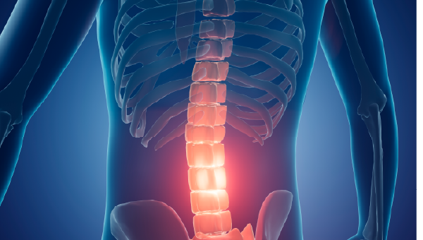
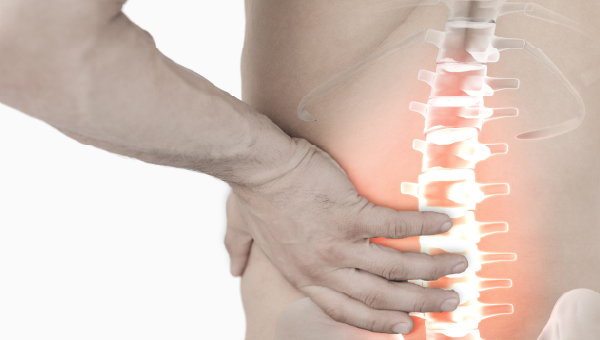
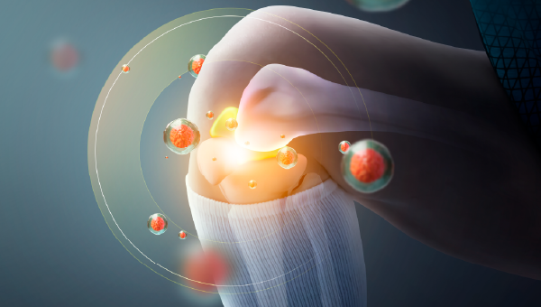
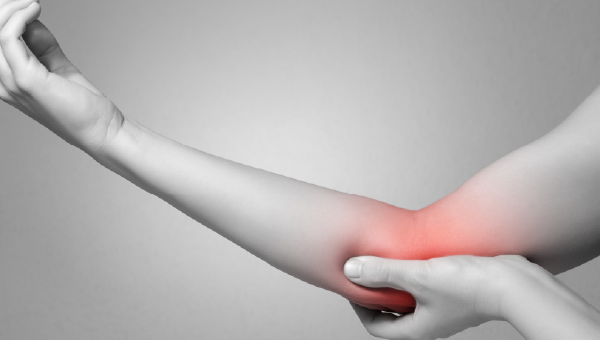

Suh Seungpyo Orthopaedic Clinic 척추·관절 클리닉
-

협착증
척추 내 신경이 지나가는 통로가 좁아지며 신경을 압박하여 통증이 발생합니다.
선천적으로 척추관이 좁은 경우도 있으며 후천적으로 주변의 불필요한 뼈와 인대가 두꺼워지면서 척추관을 압박하기도 합니다.디스크
퇴행성 변화 또는 외상 등으로 인해 디스크 내부의 수핵이 밖으로 빠져나가면서 주위 신경을 압박하게 됩니다.
이 때 자극이 가해짐과 동시에 염증이 발생하여 통증이 발생하게 됩니다.측만증
앞에서 봤을 때 일자로 있어야 하는 척추가 S자로 회전변형하는 질환으로, 어깨 및 골반의 높이가 달라지거나 몸통이 한쪽으로 기울어 있는 증상을 보이며 성장기 때 증가합니다.

요통
여러가지 요인에 의하여 허리에서 통증이 발생하는 것으로 일시적인 통증이 느껴질 수도 있지만, 오래 방치될 경우 만성 통증 질환으로 진행되기도 합니다.
골다공증
뼈의 성분과 양이 줄어들면서 뼈가 약해지는 질환이며,
그만큼 일상 생활 중에서도 골절의 위험도가 높아지므로 예방이 매우 중요합니다. -

관절염
관절과 관절을 이어주는 연골이 마모되어 뼈가 서로 마찰하여 염증성 변화와 통증이 발생하는 것을 말하고, 무릎, 손, 팔꿈치, 발목, 고관절 등 다양한 부위에서 발생할 수 있습니다.
오십견 (유착성 피막염)
염증으로 인해 어깨 관절이 유착되어 움직임에 제한이 생기는 질환으로, 모든 각도로 팔이 잘 올라가지 않고 통증이 매우 심하기도 합니다.
테니스 엘보우 (외측상과염)
힘줄을 많이 사용해 퇴행성 변성 및 염증이 생기면서 움직일 때 통증이 발생하는 질환으로 통증이 매우 심한것이 특징이며,
주로 외측에 염증이 발생하지만 내측에 염증이 발생하기도 합니다.
건초염
힘줄과 힘줄막의 잦은 마찰로 인한 염증반응으로, 이로 인해 부종, 발적 및 통증이 발생하는 질환입니다.
손목, 어깨, 무릎, 뒤꿈치 등 모든 관절에서 발생합니다.